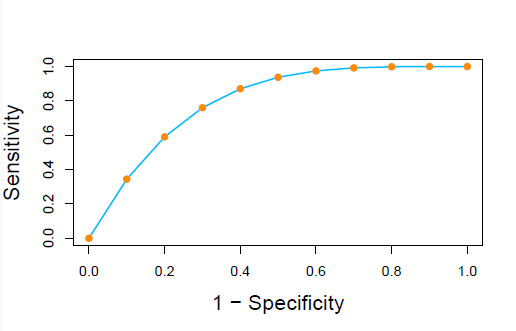

Logistic Regression and Discriminant Analysis¶
1 逻辑回归¶
对于一个模型，结果的标签更常见的是概率形式
\[
\eta (x) = P(Y = 1 | X = x)，
\]
这里我们认为 \(Y\) 只有 0 和 1 两种可能，服从伯努利分布。
逻辑回归就是要把 \((- \infty, + \infty)\) 映射到 \([0, 1]\) 范围上，使之以概率的形式表达，一般采用
\[
\log \frac{\eta(x)}{1 - \eta(x)} = x^T \beta , \quad \eta(x) = \frac{\exp{x^T \beta}}{1 + \exp{x^T \beta}}.
\]
求解系数¶
对于现在这个 Logistic 函数 \(\eta(x)\) ，我们先写出它的对数似然函数
\[
l \log {L(\beta)} = \sum_{i=1}^n \log{p(y_i | x_i, \beta)},
\]
并转化为
\[
l = \sum_{i=1}^n y_i x_i^T \beta - \log{[1 + \exp{(x_i^T \beta)}]}.
\]
使用牛顿法更新 \(\beta\) ，直到最大化似然函数
\[
\beta^{new} = \beta^{old} - [\frac{\partial^2 l(\beta)}{\partial \beta \partial \beta^T}]^{-1} \cdot \frac{\partial l(\beta)}{\partial \beta}\Big|_{\beta^{old}}.
\]
公式推导待学习
2 评价分类模型¶
混淆矩阵¶
理论上模型的训练结果可以概括为
| 观测为真 | 观测为假 | |
|---|---|---|
| 预测为真 | TP | FP |
| 预测为假 | FN | TN |
给出三种指标进行评价：
-
准确率
\[Overall Accuracy = \frac{TP + TN}{TP + TN + FP + FN}\] -
灵敏度
\[Sensitivity = \frac{TP}{TP + FN}\] -
特异度
\[Specificity = \frac{TN}{TN + FP}\]
ROC 曲线¶
以上方法只能在一个确定的阈值（这里指区分真和假的界线）下使用，但是为了评价阈值变化时的模型表现，我们引入 ROC 曲线

这体现了阈值变化时模型的灵敏度和特异度指标的改变。
这里，曲线下的面积 AUC 越接近 1，说明模型的分类能力越好。
3 LDA 和 QDA¶
？听不懂